Valentín comienza en solitario haciendo autoventa solamente en las tiendas tradicionales, tanto en Medina del Campo como en su comarca, con la distribución inicial de Flan Dhul.
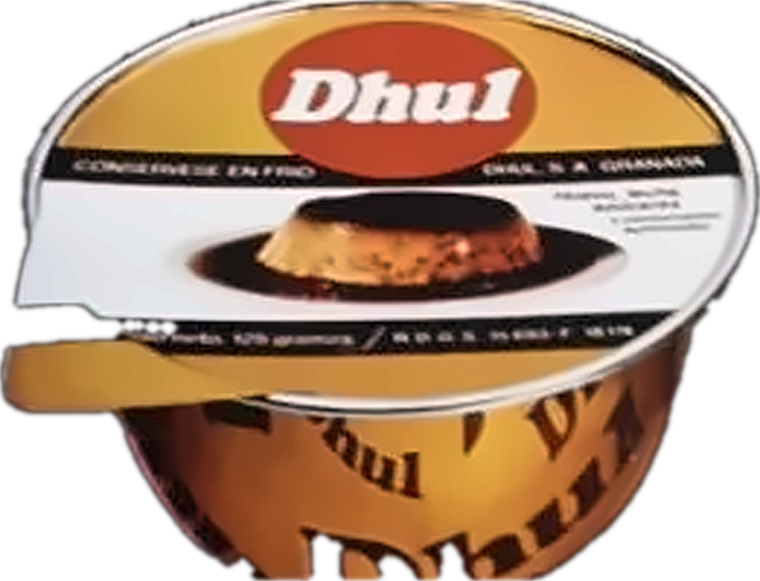
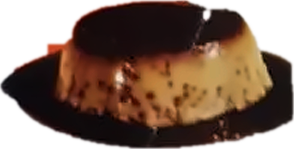
Foto fundacional [POR CONFIRMAR]
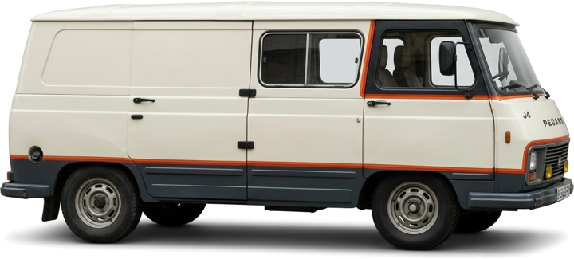
1986
Primeras rutas comarcales
Salimos a los pueblos cercanos con leche fresca RAM pasteurizada en bolsa, de fecha de caducidad corta, en un Mercedes DKV.
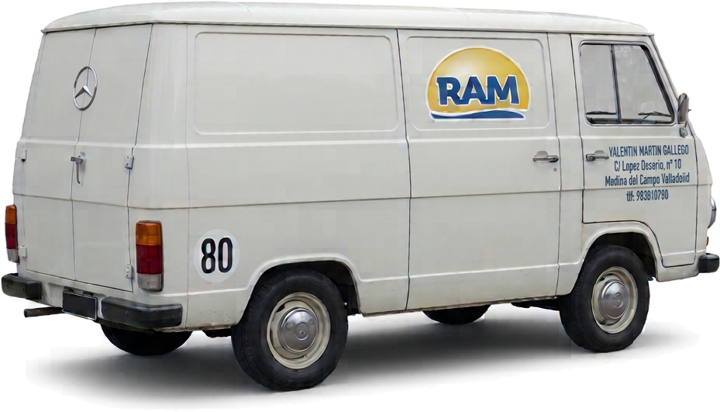
1989
Primer producto de hostelería
Palacio de Bornos, nuestro primer producto emblemático para hostelería, cuyo cava presentamos como «el primero de Castilla y León».
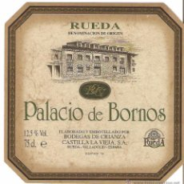
1993
Llega el Grupo Leche Pascual
Incorporamos una marca de referencia, con la leche en brik como bandera y un gran portfolio: yogures sin frío, natas y Zumosol. Pasamos de la autoventa a la preventa y luego al reparto.
Vehículos: MB 180D y MB 410, frigoríficos.
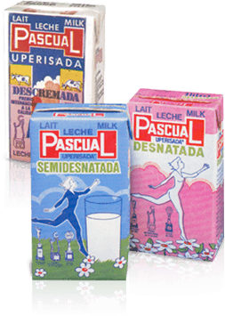
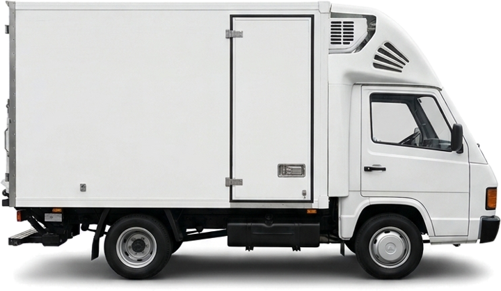
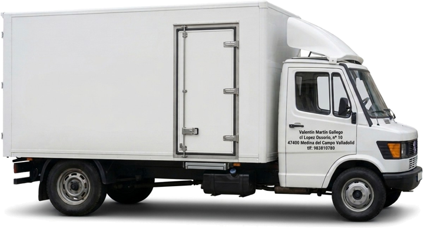
Foto de archivo de la llegada del fabricante [POR CONFIRMAR]
1998
El salto al frío: servicio integral HORECA
Con la llegada de Bifrutas se nos abrió la puerta del cliente de hostelería. Desde aquí servimos de forma integral al canal HORECA.
Vehículo: camión frigorífico.
Primeras cámaras frigoríficas [POR CONFIRMAR]
2001
Nueva nave en el polígono
Nos trasladamos a la nave del polígono industrial en la que seguimos hoy.
2004
Llega Helios
Incorporamos la marca Helios, de conservas.
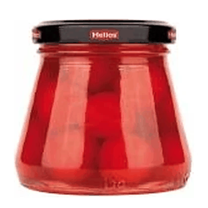
2004–2008
Salamanca y alrededores
Con Pascual en alimentación llegamos a Salamanca capital y pueblos de alrededor, y sumamos otro vehículo de reparto, un Ford Transit. Nuestro ámbito de reparto pasó de 50 a 90 km.
Vehículo: Ford Transit.
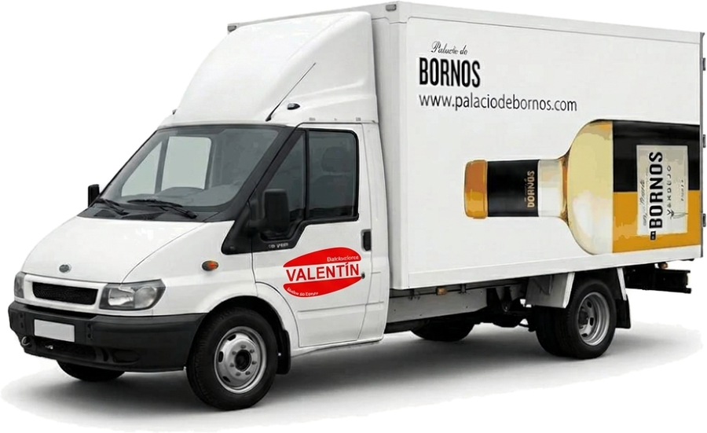
2012
Café Mocay y consolidación de la hostelería
Incorporamos Café Mocay, con un vehículo comercial rotulado (un Ibiza), y consolidamos nuestro servicio a hostelería.
Vehículo: comercial Mocay, un Ibiza.
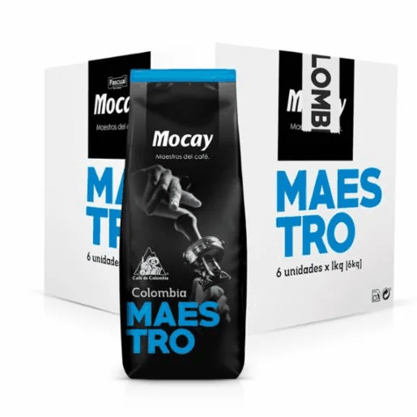
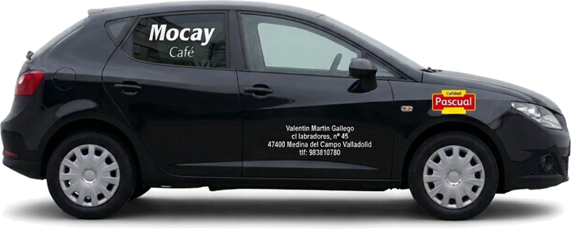
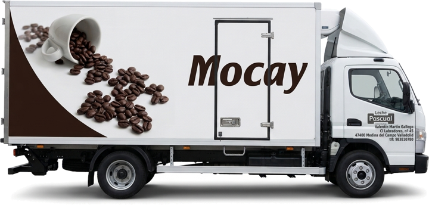
Equipo e instalaciones, digitalización de pedidos y rutas [POR CONFIRMAR]
2016
Llega el vino Ribera del Duero
Incorporamos Pinna Fidelis, vino de la Ribera del Duero.
Vehículo: Mitsubishi, con publicidad de Mocay.
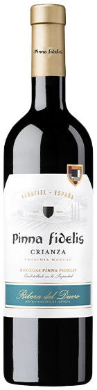
2017
Campofrío, un gran fabricante
Llega el Grupo Campofrío: Navidul, Revilla, Oscar Mayer y Campofrío. Es hoy nuestra principal distribución de productos refrigerados.
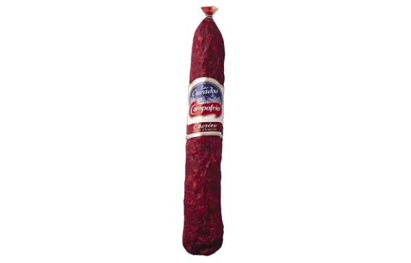
Acuerdo con el fabricante [POR CONFIRMAR]
2020
Primer vehículo de reparto eléctrico
Estrenamos nuestro primer vehículo de reparto eléctrico, un Citroën ë-Jumpy.
Vehículo: Citroën ë-Jumpy, eléctrico.
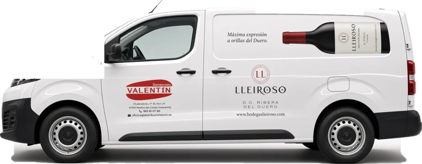
2023
Llega el menaje: Casa Muñoz se incorpora
Incorporamos el menaje al absorber la actividad de Casa Muñoz, distribuidor de la zona, con motivo de su jubilación.
Mapa ilustrativo, no a escala. El anillo exterior (90 km) se ilumina al llegar al hito de Salamanca (2004–2008). Faltan por recopilar algunas fotos de archivo.